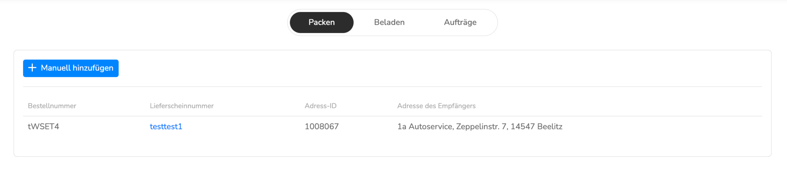
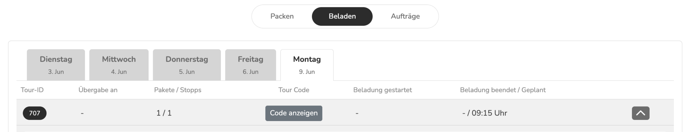
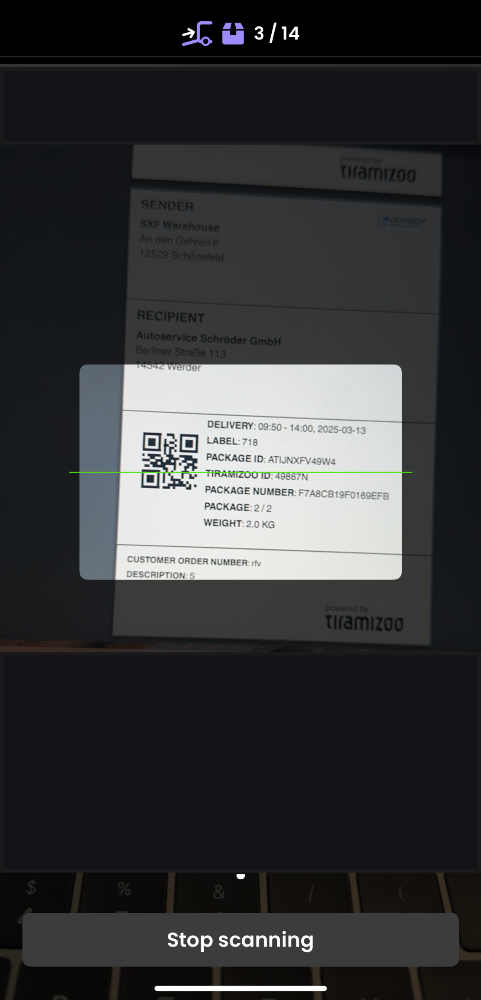
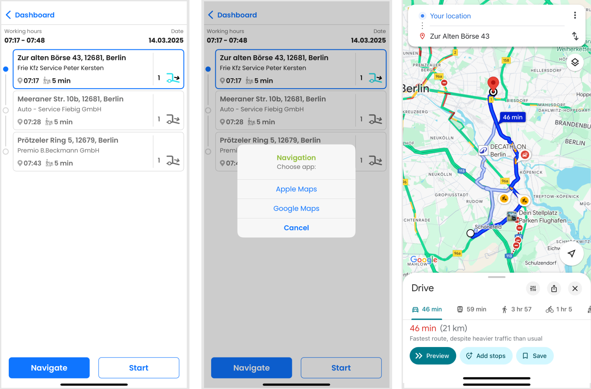
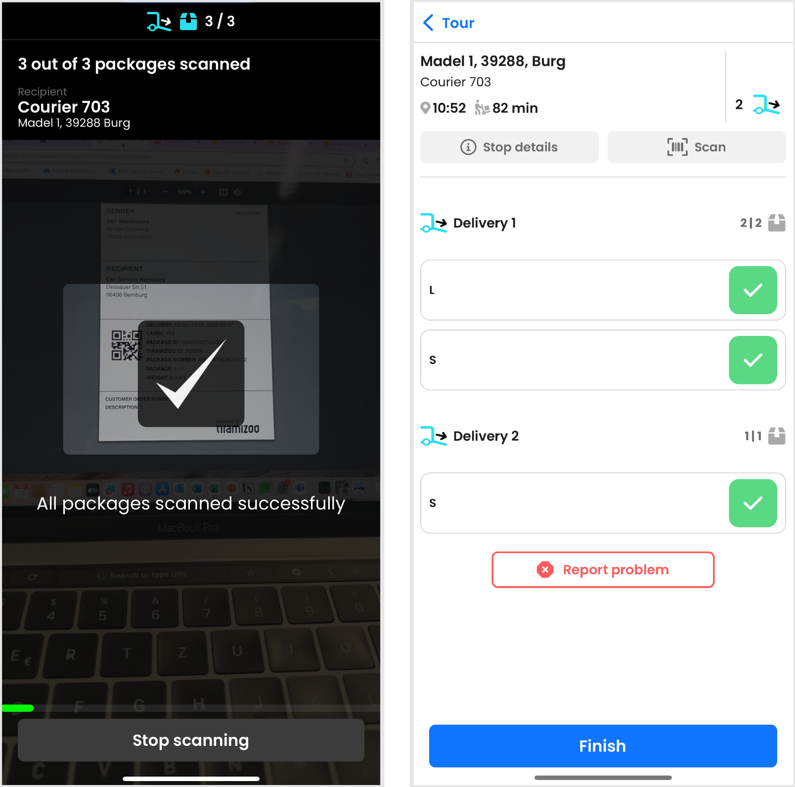
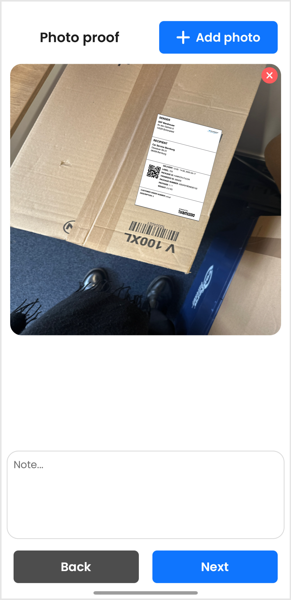

Speziell entwickelt für Warenlager mit eigener B2B-Direktbelieferung in der Ersatzteillogistik. Der ALV (Automotive Large Volume) digitalisiert jeden Arbeitsschritt – von der Auftragserstellung bis zur Zustellung.

Alle Warenlager mit eigener Direktbelieferung stehen vor dem gleichen, strukturellen Problem: Die Logistik muss sich der Warenbereitstellung unterordnen – ohne Digitalisierung und Automatisierung gehen Effizienz und Kontrolle verloren.

Sechs integrierte Module – vom Label-Druck bis zur Kurier-Navigation. Kein Flickwerk, kein Excel.
ERP/WMS-Aufträge werden automatisch übernommen oder manuell angelegt. Labels mit QR-Code werden sofort gedruckt – der Greifer braucht keine zweite Oberfläche.
Der Warehouse Manager sieht live, welche Pakete der Kurier bereits gescannt hat. Fehlendes oder falsches Paket? Sofortige Warnung. Tour-Freigabe erst, wenn alles stimmt.
Leg 1 bleibt stabil für maximale Lagerflexibilität – mit periodischer Neubewertung. Leg 2 optimiert dynamisch nach über 12 Parametern: Zeit, Distanz, Zeitfenster und mehr.
Leg 1 → Leg 2 Übergabe an festen Umladepunkten. Übergabezeiten automatisch koordiniert, jede Übergabe per Scan dokumentiert. Rückläufer fließen automatisch in den Tourplan ein.
Kunden melden Retouren vorab an – Labels werden automatisch per E-Mail versendet. Die Abholung integriert sich nahtlos in den Tourablauf: Leg 2 → Leg 1 → Warenlager.
Web-Oberfläche für Warehouse-Team (Packen, Beladen, Aufträge). Mobile Kurier-App für iOS & Android mit Navigation, Scanning und Fotonachweis. Kunden erhalten Tracking per E-Mail.
Fünf Schritte – vollständig digital, lückenlos dokumentiert.
ERP/WMS übermittelt Auftragsdaten automatisch – oder der Greifer legt manuell an. Label mit QR-Code wird sofort gedruckt. Paket ist der richtigen Tour zugeordnet.
Der Kurier scannt jedes Paket beim Einladen. Das Warehouse-Team sieht den Status in Echtzeit im Web-Interface. Falsches Paket? Sofortige Warnung in der App.

Erst wenn alle Pakete gescannt sind, schließt der Warehouse Manager die Tour. Der Kurier kann erst dann losfahren. Volle Kontrolle, bis zur letzten Sekunde.
Nach Tour-Abschluss berechnet der Algorithmus die optimale Stoppreihenfolge für Leg 1 und Leg 2 – unter Berücksichtigung von über 12 Parametern. Der Kurier navigiert direkt über seine bevorzugte App.

Pakete, die über einen Shuttle-Fahrer zugestellt werden, übergibt der Leg-1-Kurier direkt am Übergabepunkt – per Scan in der App. Beide Seiten bestätigen die Übergabe, Verantwortlichkeit wechselt automatisch. ALV koordiniert beide Stufen ohne manuelle Abstimmung.

Jede Zustellung wird per Scan, Foto und Kundenunterschrift dokumentiert. Retouren fließen direkt zurück in den Tourablauf. Lückenlose Nachverfolgbarkeit für alle Beteiligten.

Bis zu:
Kein One-size-fits-all. Der ALV wird auf Ihr Warenlager, Ihre Routen und Ihr Sendungsvolumen ausgelegt.
Kein Commitment. Wir melden uns innerhalb von 24 Stunden.
Ja. Der ALV verfügt über eine standardisierte API für ERP/WMS-Systeme. Aufträge werden automatisch übernommen, sobald sie im ERP/WMS erstellt werden. Alternativ ist jederzeit auch eine manuelle Auftragserstellung direkt in der tiramizoo-Oberfläche möglich – ohne Abhängigkeit vom ERP.
Das tiramizoo-Team begleitet Sie durch alle Einführungsschritte: Anforderungsanalyse, Konfiguration, Onboarding der Nutzer und Go-Live. Die genaue Dauer hängt vom Umfang der ERP-Integration und der Anzahl der Touren ab. Sprechen Sie uns an – wir erstellen einen konkreten Projektplan für Ihr Warenlager.
Der Tourplan kann jederzeit über das Web-Interface gedruckt werden: Touren-Rubrik → gewünschte Tour auswählen → Details → Drucken. Damit ist auch ohne Gerät eine Zustellung möglich. Zusätzlich kann ein anderer Kurier denselben Tour-Login auf einem Ersatzgerät übernehmen.
Retouren werden aktuell vom Reklamations-Team im Warenlager erfasst. Kunden melden die zu retournierenden Pakete und deren Anzahl vorab an – daraufhin werden automatisch die passenden Labels erstellt und per E-Mail an den Kunden versendet. Die Abholung integriert sich in den regulären Tourablauf.
Der ALV ist als professionelle Branchenlösung konzipiert und skaliert mit Ihrem Volumen. Er ist besonders dann ein deutlicher Vorteil, wenn das bisherige System – ob Excel, Papier oder ERP-Behelf – strukturell an seine Grenzen stößt. Kontaktieren Sie uns für eine ehrliche Einschätzung, ob der ALV zu Ihrem aktuellen Setup passt.
Fordern Sie eine Präsentation an – wir zeigen Ihnen den ALV live und besprechen, wie er in Ihre Prozesse passt.